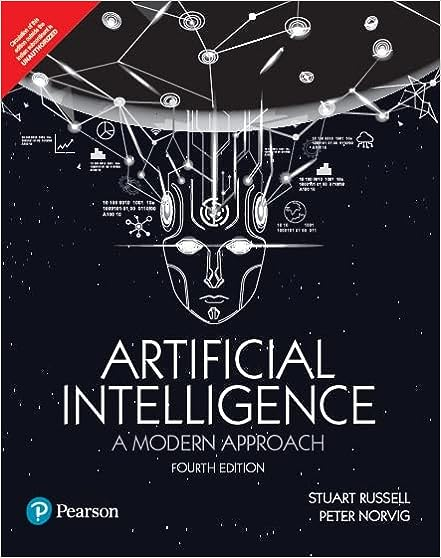
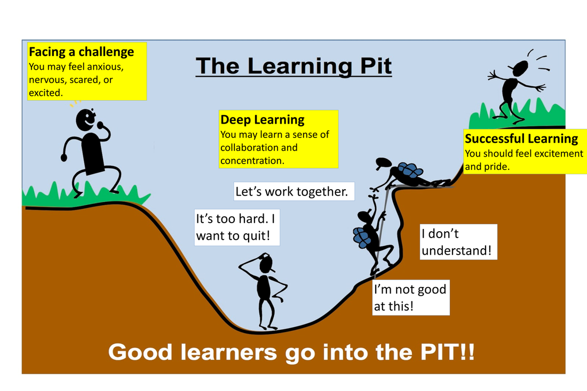
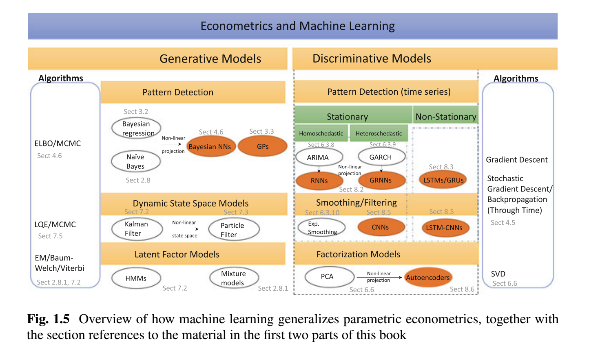

Why study Financial AI?
FIN7030
Barry Quinn
2025-01-20
Outline
- :salt[Course introduction]
- :heatWhat is AI?
- :heat[Financial AI]
- :salt[Statistical modelling]
- :heat[Machine learning and financial econometrics]
- :salt[Advantages and challenges in using Financial AI]
About Me
Barry Quinn in Home Attic Office
Find me at…
:fat[Please read my communication policy to get feedback]
Enhancing Mathematical Understanding in Machine Learning
- Machine learning’s essence lies in grasping numerous mathematical foundations
- Our course aims to nurture an intuitive grasp of these principles, steering clear of excessive technicality
- We acknowledge that solely relying on mathematical notation might deter engagement
- To counter this, we’ll adopt a dynamic learning strategy, employing code, discussions, and tangible examples to bring concepts to life
- Embracing a multifaceted learning methodology not only fosters deeper understanding but also ensures the retention of knowledge
- Predominantly, our sessions will feature hands-on coding exercises. This “learn by doing” philosophy encourages experimentation, allowing for mistakes that solidify learning
What is AI?


What is AI?
- Left figure is a tongue and cheek view, but highlights one of the two disciplines involved in the development of AI applied statistics
- Right figure is a word frequency cloud diagram charting the top 100 AI company’s twitter accounts activity sourced from a 2017 report from Onalytica Inc.
- Artificial intelligence is a suitcase word, capturing many aspects of advanced statistics, machine learning and data science
- Roughly speaking, the workhorse of any AI business strategy is a well designed AI lifecycle
2023 AI Index Report
From the Stanford Institute for Human-Centered Artificial Intelligence (HAI)
:saltinline[Key takeaways]
- Industry outpacing academia in releasing machine learning models
- AI’s mixed impact on the environment
- AI accelerating scientific progress
- Increase in incidents of AI misuse
- Growing demand for AI-professional skills in the U.S.
- Decrease in private investment in AI
- Stagnation in AI adoption by companies, but those adopting are benefiting
- Increased policymaker interest in AI
:small[Click here for full report]
AI Hype : Is it different this time?
Historically, the positive fallout from technology adoption waves, empowers some humans, typically to the detriment of others
This time could be different, as AI is the first tool in history:
- that can “make decisions” by itself
- that can create “new ideas” by itself
Such properties have led to the development of the areas of AI Safety
For more details listen to Yuval Noah Harari on AI Safety
Demystifying AI

Four Definitions of AI
AIMA provides four definitions based on Thought vs. Action
Demystifying AI: Thinking Humanly
Summary: Leveraging computational models to simulate human cognitive processes.
Examples:
Neural Networks: Used for credit scoring by analyzing a large dataset of customer information to predict creditworthiness
Cognitive Architectures: Designing intelligent systems to simulate traders’ decision-making processes in stock markets
Demystifying AI: Thinking Rationally
Summary: Constructing AI systems capable of logical inference to symbolize knowledge and solve complex problems.
Examples:
Classical AI: Developing rule-based systems for regulatory compliance and monitoring
Expert Systems: Creating platforms that offer financial advice based on a vast knowledge base and rules set by financial experts
Demystifying AI: Acting Humanly
Summary: Crafting rational agents optimized to take the most beneficial actions based on their perceived understanding of the world.
Examples:
Decision-Making Algorithms: Algorithms facilitating high-frequency trading by making rapid decisions based on market conditions
Planning: Utilizing AI in strategic financial planning and asset management to maximize returns
Demystifying AI: Acting Rationally
Summary: Crafting rational agents optimized to take the most beneficial actions based on their perceived understanding of the world.
Examples:
Decision-Making Algorithms: Algorithms facilitating high-frequency trading by making rapid decisions based on market conditions
Planning: Utilizing AI in strategic financial planning and asset management to maximize returns
Learning Techniques: Applying reinforcement learning in algorithmic trading to learn and adapt trading strategies continuously based on market dynamics
Value proposition of AI in Finance Services
- Traditional AI and analytics is just traditional machine learning (e.g. clustering) and statistical techniques (e.g. regression)
- Advanced AI is the area of deep learning using neural networks
- McKinsey report is from 2017
AI life cycle

- The AI life cycle is a comprehensive approach from conception to production of AI
- ?@fig-crispdm shows the original life cycle model for AI deployment proposed by Shearer (2000)
- One important component missing in this early life cycle is a feasibility study before design, develop, and deploy stages
- De Silvia (2022) suggest such as assessment should consider privacy, cybersecurity, trustworthy AI, usability, and social implications
CRISP-DM stands for Cross Industry Standard Process for Data Mining
AI life cycle


Microsoft AI life cycle
- More recently, as terminology transitioned from data mining to “data science” and “data analytics” Microsoft proposed ?@fig-tdsp1 largely replacing CRISP-DM
- Top figure proposes stronger dependencies but does not enforce a particular order, emphasising that different stages can be interatively repeated at almost any time in the project
- Bottom figure shows the nine stages of the ML workflow in TDSP
- Large arrows emphasising model evaluation and monitoring can affect a feedback loop to any of the precedent stages
This is a more “agile and iterative data science methodology”
Algorithms, capabilities and applications

- Above presents a taxonomy for the mapping between applications, capability and algorithm
- AI is capable of predictions, classification, association, and optimisation
AI life cycle for FinTech


Microsoft AI life cycle FinTech Model proposed by Haakman et al. (2021)
- This figure provides the results of a case study of ING bank conducted by Haakman et al. (2021)
- They proposed an adaption of the TDSP methodology for FinTech with their refinements in shaded parts with bold text
- The key takeaways for fintech (and by extension an AI strategy for the irish credit union movement) are:
- Adoption of AI may be a No-go in many areas of finance
- For a successful AI strategy particular attention needs to be placed on documentation of each step (and misstep)
- Feasibility needs to be embedded at the early stage of every problem
- Much more care and domain expertise is required to produce AI models that work with the noisy and changing nature of financial data
Computer age statistical inference
Context is king in statistics
Financial datasets used to solve modern investment problems offer unique challenges which are beyond many plug and play data science algorithms
The era of “Big Data” has provided a backdrop for the rapid expansion of immense computer-based processing algorithms, for instance, random forest for prediction
The importance of inferential arguments in support of the ML applications has emerged as an exciting (yet underdeveloped) field
Computer age statistical inference in finance
Context is king in statistics
This is particularly true for financial research questions where the complexity of the data story (or more formally the data generating process which underpins the sample) result in notoriously noise covariance matrices
A small percentage of information these matrices contain is signal, which is systemically suppressed by arbitrage forces
This course will introduce best practice techniques in financial data science which can help illicit economically meaningful signal and answer contemporary financial research questions
What to expect from me
- I am passionate about students learning through growth mindsets
- Neuroscience tells us that permanent changes in our brain require a journey which can take you through the learning pit
- I will provide you with the tools to navigate your way through this learning journey
- Give you feedback because I believe in you
What I expect of you
- Be passionately curious and challenge yourself
- Communicate in a polite and professional manner
- Be prepared and motivated to self study
- Be prepared to struggle in the learning pit but see success at the end
- Ask for help only after trying and coming up short

Assessment
40% Critical Generative AI project on Trading
60% End of term computer based practical test
Rough course plan
| Topic | Week |
|---|---|
| Why to study Financial AI? | 1 |
| High-performance cloud computing in finance | 2 |
| Denoising and detoning | 3 |
| Distance metrics | 4 |
| Optimal clustering | 5 |
| Explainable Artificial Intelligence | 6 & 7 |
| Testing set overfitting | 8 & 9 |
| Round up | 10 |
- We will also have a careers in Quant Finance Masterclass (TBC)
Big Data - Big Compute in Finance
Exponential growth in machine readable data to record and communicate activities in the financial system
- IBM has estimated that 90% of the world’s data sets have been created in the last 2 years
- IMB estimate by 2020 there will be 44 zettabytes (44 trillion gigabytes) created, 300 times the amount in 2005
{kind=link}
Persistent growth in computer power
Hedge-fund firm Two Sigma has built a computing system with more than 100 teraflops of power, which is 100 trillion calculations per second
Big Data - Alternative Data in Finance
- Many of these are new dataset are classed as alternative
- Alternative data typically have the following properties:
| Property | Example | Algorithmic Goal |
|---|---|---|
| Unstructured, non-numerical and or non-categorical | News articles, Voice recordings, Satellite images | Sentiment Extraction, Commodity supply shocks |
| High-dimensional | credit card transactions | Fraud |
| Sparse containing NaNs (not-a-number) | mixed frequency | Economic nowcasting |
| Implicitly contains information about networks of agents in system | Trade order book data | Black Swan event detection |
Why study Financial AI?
Classical econometrics fails on these Big datasets
Linear algebra methods (eg.OLS) can fail in high dimensional data where there can be more variables than observations
Geometric objects, like covariance matrices, fail to recognise the topological relationships that characterise networks
FML offer numerical power and functional flexibility needed to identify complex patterns in high-dimensional space
Interaction effects all the way down
High-dimensional datasets with many features (predictors) may have complex patterns
For \(p\) features there may be up to \(2^p-p-1\) interaction effects
Unlike ML algorithms, econometric models do not learn the structure of the data
In classical linear regression the model specification may easily miss some interactions, whereas, an ML algorithm, such as a decision tree, will recursively partition a dataset into subsets with simple patterns, which can be fit independently with simple linear specifications
Empirically Driven Asset Pricing
Finance problems that are fundamental about prediction are easily reimagined in the FML paradigm
Measurement of an asset’s risk premium is fundamentally a prediction problem where the risk premium is the conditional expectation of a future realised excess return
Gu, Shihao, Bryan Kelly, and Dacheng Xiu. 2020. “Empirical Asset Pricing via Machine Learning.” The Review of Financial Studies, Working Paper Series, February. https://doi.org/10.1093/rfs/hhaa009
Methods that can reliably attribute excess returns to tradable anomalies are highly prized
Fintech growth areas using AI
Robo-Advisors
Fraud detection
Cryptocurrencies
AI Trading Strategies
What is an algorithm?
🤔
Very broadly speaking, algorithms are what statisticians do while inference says why they do them. A particularly energetic brand of the statistical enterprise has flourished in the new century, data science, emphasizing algorithmic thinking rather than its inferential justification.
—- Efron and Hastie, 2016
ML algorithms learn complex patterns in a high-dimensional space with little human guidance on model specification
—- Lopez de Prado, 2019
What is machine learning?
🤔
If a machine can think, it might think more intelligently than we do, and then where should we be? Even if we could keep the machines in a subservient position … we should, as a species, feel greatly humbled.
—- Alan Turing, 1951
The first ultraintelligent machine is the last invention that man need ever make, provided that the machine is docile enough to tell us how to keep it under control.
—- Irving J. Good, 1965
Machine Learning and Prediction
ML covers various classes of algorithms for pattern recognition and decision-making.
| Paradigm | Goal | Examples |
|---|---|---|
| Supervised Learning | Using labelled data the goal is to learn the relationship between \(X\) and \(Y\) | Random Forests, Extreme Boosted Trees, Recurrent Neural Networks |
| Unsupervised Learning | Given a set of unlabelled data the goal is to retrieve exploratory information about, groupings or hidden patterns | Hierarchical clustering, \(k\)-mean clustering, hidden Markov models, Gaussian mixtures |
| Reinforcement learning | An algorithmic approach to Bellman optimality of a Markov Decision Process | A form of dynamic programming used for decisions leading to optimal trade execution, portfolio allocation, and liquidation over a given horizon |
Types of supervised learning models
Discriminative
- Learnings the decision boundary between the classes
- Implicitly learns the output conditional on the input
Examples: Decisions tree, Neural network
Generative
- Explicitly learns the joint distribution of the input and the output
- Can use Bayes’s rule to also extract the conditional distribution
Example: Restricted Boltzmann machine (RBM)
Artificial intelligence
- We are now in the era of narrow AI
- AI experts’ predictions vary as to when we can see artificial general intelligence (AGI)
Machine Learning (ML)
- This is generally thought of as a branch of AI
- Traditional machine learning algorithms are designed for cross-sectional data sets
- Many financial problems require explicit modeling of complex time series properties
Deep learning
- Is a branch of ML which has been the media darling of AI industry expansion
- At its core it is using neural networks; algorithms inspired by the structure of the human brain
- Statisticians are less impressed, and prefer to categorise these models as semi-parametric to non-parametric
Statistical Modeling Vs Machine Learning
Supervised machine learning is often an algorithmic form of statistical model estimation in which the data generation process is treated as an unknown (Breiman 2001)
Model selection and inference is automated, with an emphasis on processing large amounts of data to develop robust models
It can be viewed as a highly efficient data compression technique designed to provide predictors in complex settings where relations between input and output variables are non-linear and input space is often high-dimensional
Machine learners balance filtering data with the goal of making accurate and robust decisions, often discrete and as a categorical function of input data
Statistical Modeling Vs Machine Learning (continued)
This fundamentally differs from maximum likelihood estimators used in standard statistical models, which assume that the data was generated by the model and typically have difficulty with over-fitting, especially when applied to high-dimensional datasets
Given the complexity of modern datasets, whether they are limit order books or high-dimensional financial time series, it is increasingly questionable whether we can posit inference on the basis of a known data generation process
It is a reasonable assertion, even if an economic interpretation of the data generation process can be given, that the exact form cannot be known all the time
Modeling paradigms
Parametric models
- Parametric assume finite set of parameters and model the response as a function of the input variables and the parameters
- They potentially easier to interpret but have limited flexibility, especially in big data with complex patterns
Examples: OLS regression, neural networks, hidden Markov models, etc
Non-parametric models
- They treat the parameter space as infinite dimensional; i.e. they introduce a hidden or latent function
- They grow in complexity with more data
Examples: kernel methods, support vector machines, Gaussian processes
Theory matters for algo investing strategy success
Backtesting is not a good research tool
- Backtests can never prove that a strategy is a true positive
- At best they can only provide evidence of a false positive strategy
- Strategy success requires theory support, not historical simulations
Easley, David, Marcos M. López de Prado, and Maureen O’Hara. 2012. “Flow Toxicity and Liquidity in a High-Frequency World.” The Review of Financial Studies 25 (5): 1457–93.
- This paper describes how a market microstructure theory predicted the 2010 Flash Crash and use ML to profit from this black swan event
ML Helps discover theories
A successful theory will be predicted out-of-sample. Furthermore, it will explain not only positives (x cause y) but also negatives (the absence of y is due to the absences of x)
In a theory discovery process, ML plays the key role of decoupling the search for variables from the search for specification.
Classical statistical methods do not allow this decoupling of the two searches.
Scientific discovery and ML
ML models are wrongly characterised as “oracles”
An oracle is a black box that is able to produce a solution for any instance of a given computational problem Complexity theory definition
Recent scientific discoveries have reveal radically different uses of ML
Existence: ML has been deployed to evaluate the plausibility of a theory across many scientific fields
Importance: ML algorithms can determine the relative informational content of explanatory variables for explaining or predicting purposes
Causation: ML algorithms are often used to evaluate causal inference (casual random forest; Athey,2015)
The Dark Side of ML
Training set overfitting
Problem
- Training set overfitting results from choosing a specification that is so flexible that it explains not only the signal, but also the noise
- The results will be a model which is overconfident in predicting incorrectly
Solutions
- Evaluate the generalisation error, through resampling techniques and Monte carlo methods
- Regularisation methods to prevent model complexity unless it is justified in terms of greater explanatory power
- For example LASSO techniques to reduce parameters or early stopping to restrict the model’s structure
- Ensemble techniques to reduce the variance of the error by combining the forecasts of a collection of estimators
Test set overfitting
[ - A standard approach in industry is to use historical data to backtest an investment strategy identified from the training set
Researchers who run multiple statistical tests on the same data set are more likely to make a false discovery
This selection bias comes from fitting the model to perform well on the test set, not the train set
Test set overfitting occurs when a researcher backtests a strategy until the output achieves a desired performance
The poor performance of a backtest should be a sign to fix the research process, not the investment strategy ]{.large}
Solutions to test set overfitting
Use the familywise error rate (FWER) or the Deflated Sharpe ratio
- FWER evaluates the probability of at least one of the outcomes of a number of independent backtests is a false positive
- The Deflated Sharpe ratio is a statistics that controls for the FWER
Use combinatorial purged cross-validation methods (CPCV), which generate many test sets using resampling combinatorial splits of train and test sets
Use historical series to estimate the underlying data-generating process, and use Monte Carlo methods to create fake/synthetic samples that match the statistical properties observed in history
Backtests cannot replace a theory
[ 1. Backtests cannot simulate Black swans- only theories have the breadth and depth needed to consider the never-before-seen occurrences
- A backtest may insinuate that a strategy is profitable, but they do not tell us why ]{.large}
Backtest are not controlled experiments.
Only a theory can state the cause-effect mechanism, and formulate a wide range of predictions and implications that can be independently tested for facts and counterfacts
Financial Econometrics and Machine Learning
- Machine learning generalises parametric models in financial econometrics

Dixon et al., 2020, Machine Learning in Finance
AI and Trading